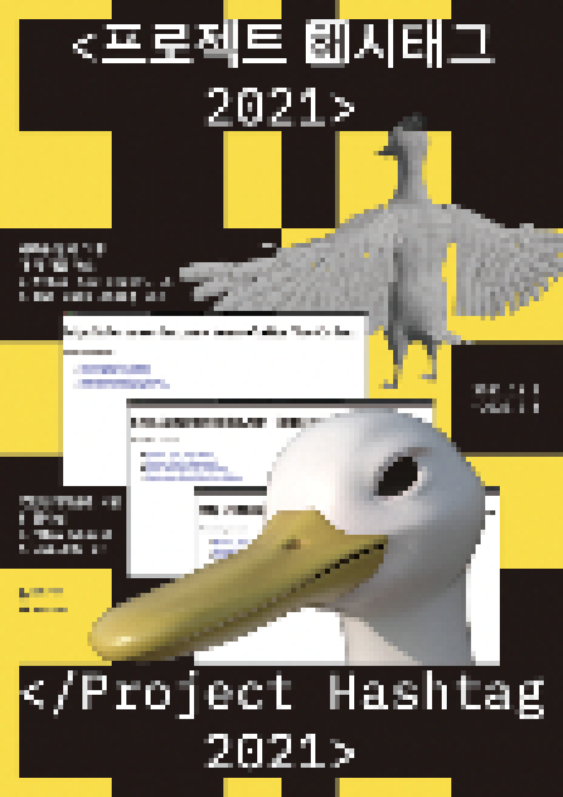

> title
프로젝트 해시태그 2021
> content
국립현대미술관 공모사업인 «프로젝트 해시태그»는 기존 미술관에서 전시하고 기획하던 시각-중심적인 예술 형태나 시간-중심적인 예술 형식을 넘어선 새로운 플랫폼을 실험하고, 서로 다른 분야의 젊은
창작자들 간의 협업을
지원하도록 설계된 프로그램이다. 공모사업의 명칭 "해시태그(#)"는 소셜 플랫폼에서 #와 주제어를 붙이면 서로 전혀 다른 글과 포스팅에서 공통 주제를 엮어낼 수 있는 혁신적인 글쓰기 방식에서
따온 것으로, 서로
관계없는 무작위의 글들 속에서 무한대수의 맥락을 만들어 낼 수 있는 가능성을 상징한다. «프로젝트 해시태그 2021»은 현대자동차의 후원으로 5년간 진행되는 «프로젝트 해시태그»사업의 두번째
쇼케이스로서 2019년
선정된 팀 강남버그와 서울퀴어콜렉티브에 이어 팀 새로운 질서 그 후...와 더 덕 어몽 어스가 선정되어 쇼케이스를 진행한다.
«프로젝트 해시태그 2021»은 웹을 둘러싼 경험과 환경의 진화에 공명하여 빠르게 변화해가는 인간성에 관한 MZ세대 작가들의 고민을 담고 있는 프로젝트이다. 판데믹 이후 온라인
안에서의 생활이 실제 세계에서의 삶을
전복하는 상황에서 온라인 공간 안에서 사람들은 더욱 더 격렬하게 웃고, 울고, 즐기며, 분노하고 있다.
이렇게 일상의 삶속으로 걸어 들어온 온라인이라는 공간은 누가 지키고, 누가
만들고, 누가
접속할 수 있는
것일까? 우리는 온라인에서 실행자들인가, 구경꾼들에 불과할까? 웹이라는 익명의 경계 없는 공간이 인간적인 가치를 왜곡하거나 뒤흔드는 경우는 없는 것일까? 웹에서 일어나는 감정들은 현실세계의
인간이 느끼고 있는 감정과
같은 것일까? 이러한 질문에 대답하기 위해 전시에 참여하는 작가들은 새로운 질서와 가치가 지배하는 가상의 공간에서 일어나는 인간적인 가치의 확장과 왜곡을 바라보고 이를 재료로 실험적인 시도를
한다.
새로운 질서 그 후... 팀은 자유롭고 개방적이며, 윤리적인 가치를 실현하고자 하였던 초창기 인터넷의 유토피아적 기대가 현재의 온라인 세계에서 실현되고 있는지 질문을 던지고
올바르게 작동할 수 있는 방향을 점검하는
작업을 한다. 이에 따라 작가들은 웹 접근성, 거대기업 플랫폼으로부터의 자유로움, 환경친화성 등의 기술 윤리적 관점에 근거하여 #올해의웹사이트상과 #국립대체미술관, #마이크로데이터센터 등의
가상세계를 구축한다.
한편으로, 이들은 전시공간에서 현재 우리가 다루고 있는 데이터와 웹 공간의 "비인간적인 스케일"을 인간적인 관점에서 가늠할 수 있도록 시각적이고 물리적인 설치들을 함께 펼친다.
더 덕 어몽 어스 팀은 온라인이라는 플랫폼에서 활발하게 진행되고 있는 서브컬처에 주목하여 익명의 서브컬처가 폭발적으로 거리낌 없이 드러내는 인간적인 욕망의 발현을 고민한다. 이들은
가상세계에서 욕망과 소비, 죽음의
순환을 상징하는 대상으로 쉽게 소비되고 버려지는 픽셀오리를 내세워서 먹방과 같은 자극적이고 찰나적인 컨텐츠들을 상징하는 #후즈더덕어몽어스?와 성욕과 식욕이 오버랩되는 웹소설 #오늘은너를먹고싶어
등을 선보인다. 특히
웹소설 #오늘은너를먹고싶어는 웹소설 플랫폼 카카오페이지에 전시 기간 중 연재하면서 스낵컬처와 전시를 연계하여 가벼운 형식으로 종차별주의, 아비투스, 소수자이론 등의 주제를 풀어낼 예정이다.
전시는 «프로젝트 해시태그»공식 홈페이지 projecthashtag.net에서 또 다른 층위로 진행된다. 이 공간은 #올해의웹사이트상, #국립대체미술관, #무슨일사전,
#무슨일선집, #오늘은너를먹고싶어,
#에고에코-에코에코 인스타그램과 같은 온라인 콘텐츠들을 하이퍼텍스트로 연결하고, 더 나아가 작가가 직접 뽑은 주제별 해시태그에 따라 작품을 재배치하여 새로운 맥락을 생산하는 역할을 한다.
홈페이지는 인터뷰, 작가
노트와 프로덕션 과정, 워크샵 등 작업의 다양한 이야기들이 얽혀져서 다양한 층위로 작업을 감상할 수 있는 창이 될 것이다.
«프로젝트 해시태그 2021»의 두 팀이 제시하고자 하는 인간적인 가치의 확장과 왜곡은 1985년 과학기술이 초래하는 인간 신체의 혼성성-확장과 왜곡을 선언하였던 도나
해러웨이(Donna Haraway)의 혁명적인
<사이보그 선언(A Cyborg Manifesto)>의 연속선상에 있다. 한편, 이러한 실험적 고민의 상상력과 대안모색은 프로젝트의 심사에 참여하였던 히토 슈타이얼(Hito Steyerl)이
짚어낸 것처럼 자본과
정치적 권력으로부터 자유로운 공공의 영역에서만 가능한 것이며, 이번 전시는 그 실천적인 모색을 통하여 새로운 세대의 미래적 어젠다들을 선점할 것이다.
- 이수연(국립현대미술관 학예연구사) -
